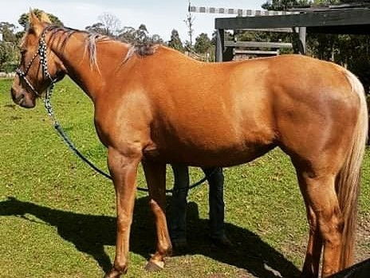
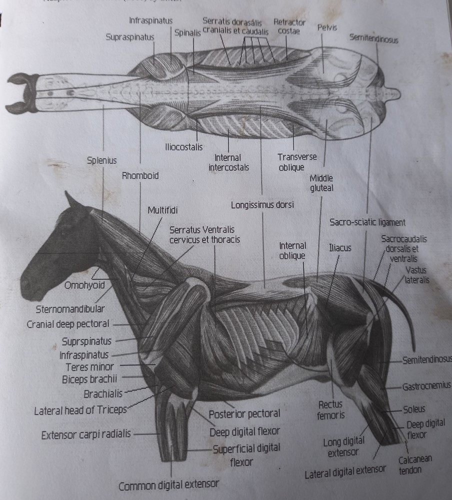
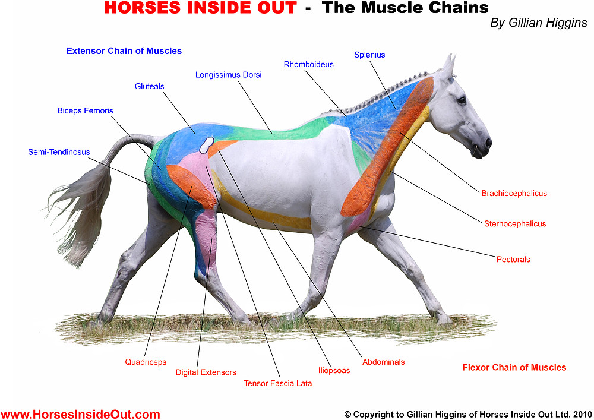

Equusential Blog Blog Posts

Posted on 10 October 2021
My horse is tight in the back - will Equine Myofunctional Therapy help?
What might indicate a sore/tight back
Just like us, horses can suffer from sore or tight back muscles. Common reasons for this can be due to
- muscle fatigue or strain from exercise
- poor saddle fit and
- poor posture/ weak muscles
Common signs that the horse might be suffering a sore or tight back are:
- horse is stiff and not moving freely, owner feels something is 'not quite right'
- horse is stiff or reluctant to bend or collect, goes around straight and with inverted posture
- horse is 'cold-backed', bucks or crow hops when saddled/ridden
- coat over the withers and back is dull, dry or visibly scarred
- topline musculature is not developed, appears 'wasted' away
- back muscles look and feel tense, they may be spasming
- horse winces, dips away, moves away when being brushed or patted on the back
- horse pins ears or tries to avoid being saddled
"... Recurrent back pain is often due to incorrect riding/ training, poor posture and poor saddle fit.."
Why massage helps a sore or tight back
Massage with a qualified professional is a great place to start if you notice your horse is tight in the back. When done correctly and empathetically massage helps to relieve back pain by correcting damaged muscles, releasing adhesions and spasmed muscles.
Effective massage to relieve pain must be done by a professional who understands how the physiology, conformation, behaviour and actions of the muscles work in order to know when and how to apply different massage techniques.

Massage with a Qualified Professional is important! Star loving his back massage for back pain
Because I work from poll to tail when massaging, sometimes by the time you get to the back the pain there is either minimised or relieved. This is because what is spasming in the back may be something originating in the neck causing tension in the whole topline. Or even as the horse relaxes into the massage they can start to 'let go' of the muscle spasms through relaxation.
I often recommend rehabilitative programs including regular massages and other tactics such as poles and carrot stretch routine to help rebuild the horse’s core and back strength and improve posture to alleviate the back strain. Back pain is a common but often overlooked reason for unsoundness.

Bindi performing carrot stretches. She developed a much stronger posture with associated benefits in demeanour and behaviour after EMT and diligently following a carrot stretch routine
Recurrent back pain is often due to incorrect riding/ training, poor posture and poor saddle fit. It can also result from a paddock injury. If I assess that the horse needs more than massage I may recommend or refer for qualified saddle fitting, classical dressage training or even veterinary care for persistent or severe issues. Owners may also seek advice from their veterinarian or a trusted qualified professional relating to the benefits to back health of chiropractic, acupuncture or other therapy.
Successful case studies using EMT for a sore, tight or damaged back
I am very familiar with having a horse with a sore back and how EMT (massage) and complementary strategies can dramatically improve the situation.
Squirrel
My horse Squirrel is an example of a horse who had serious back pain and getting to the bottom of it was why I learnt massage!
Poor saddle fit was the primary cause of Squirrel's pain. Her saddle was too wide and essentially sitting on her wither and spine. When I tried 'narrower' saddles they pinched her withers. Over time this trauma from the saddle resulted in extreme pain reactions, sporadic loss of control of hind legs, scarring and muscle damage.
After regular massage and extensive and varied rehabilitative activities and treatments (see blog post) Squirrel's back is healthy again!


L Pic 2016: Visible saddle scarring behind the withers where the hair is flattened and changed colour. Thoracic serratus became hypertrophied. Top line muscles atrophied. Loin muscle is visibly tense and atrophied. Coat is dull and discoloured.
R Pic 2020: Coat has returned to normal colour quality and hydration, top line muscles are developed, scarring has disappeared and abdominals and loin muscles are developed, thoracic serratus has returned to normal musculature. Since improving her back Squirrel's overall wellbeing is so much better!
Rage
In Rage’s case we began an intensive program of frequent massage, daily carrot stretches and pole-work after his owner Krystel described his movement as ‘twisting’ under saddle. Twisting unsoundness can be symptomatic of chronic weakness of the multifidus muscles.
Horses are also very stoic and so they may not present as obviously sore, but they are trying to cope with chronic pain or discomfort. Although Rage wasn’t presenting as abnormally sore in the back, he did have atrophied top line muscles and his wither area would twitch dramatically.
Rage’s soundness greatly improved after this rehab program, he receives monthly massages as a sponsored horse and has carrot stretch/polework reintroduced into his routine when the back muscles begin to lose tone. He is being ridden regularly again after years of lameness with no obvious source. What a great team effort!

Rage before rehab program (top) and after (bottom) greatly improved posture and back strength, strengthened hindquarters due to better back health. Thoracic trapezius muscle has improved tone. Coat condition, hydration and colour improved. Abdominal and loin muscle toned. Stance improvement. Visible improved tone of longissimus dorsi muscle. Raje is enjoying ridden life again, much happier!
Squirrel and Rage are just two examples of successful case studies of recovery from bad backs, I have countless more!
Science Stuff - what muscles are impacted in a sore or tight back
Common muscles that present as sore/reactive in the back/trunk area are:
- Thoracic trapezius muscle: Covers the wither area. Relatively thin muscle. Sensitive to ill-fitting saddles, often atrophies or hollows in horses with a sore back. Draws the scapula upwards and backwards, raises the shoulder.
- Latissimus Dorsi: Influenced by saddle fit and girth. Flexes the shoulder and draws the trunk forward
- Serratus Ventralis Thoracis (Thoracic Serrates): Tender in girthy horses. Frequently seen as hypertrophied in horses with a sore back. Works in conjunction with the Cervical Serrates. Suspends the trunk to the scapula. Raises the scapula. Shifts weight to the thoracic limb on each side. Assists with breathing. Aids in sustaining the weight of the horse when the muscle bulk relaxes, hence why it goes into overdrive when the back is sore, tense and atrophied.
- Longissimus Dorsi: Pain or atrophy in this area is commonly associated with poor saddle fit as well as rider asymmetry or poor riding. Can be impacted by sacroiliac (loin area) strain. If this muscle goes from being relaxed to tense between visits, I will suggest the rider gets their own back checked!

Back muscles from above (M. Bromiley). Deep and Superficial Muscles (S. May Davis). Muscle Chains (Horses Inside Out)
If you have any queries about the benefits of massage for suspected sore or tight back muscles, please feel free to contact me or book in an EMT session for your horse!
Yvette